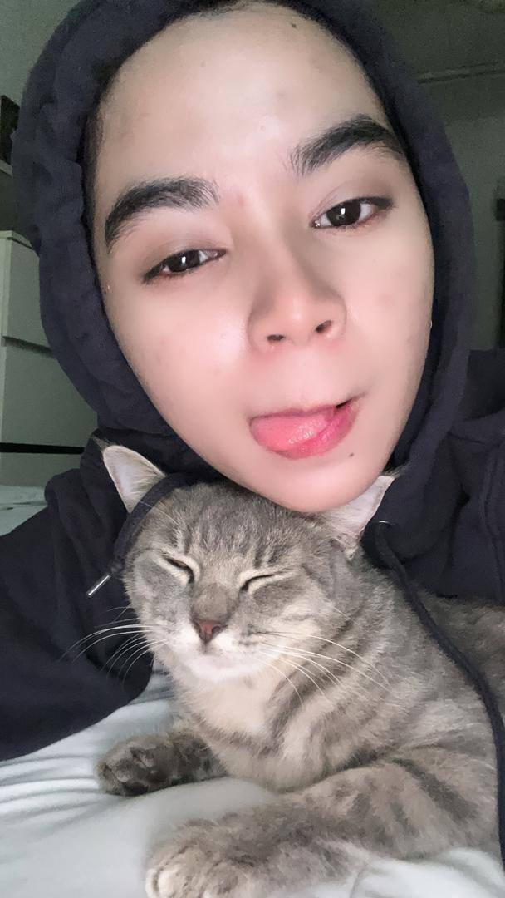

Haaaa macam yang apa awak tekan tadi , dekat sini saya nak cerita tentang saya punya pet laa takkan ak cerita pasal makanan pulakk hihi gurau ii
Haaa so dekat gambar tu itu adalah kucing kesayangan saya , namamya baby hehe cute tak nama kucing saya , cute macam saya kann hihi 😗😜, walaupun saya ada resdung tapi saya catlovers tau takk , saya sangat suka kucing lagi ii kalau kucing tu gebu hihi tapi ada satu soalan la saya nk tanya , antara kucing dengan saya yang mane lagi cute baik bagitau jawapan yang betul ehh kalau tak siap laaa. Eh dah la sikit ii dah la , haa ni last ii tekan button favourite food pulak ye hehe jumpa kat sana.